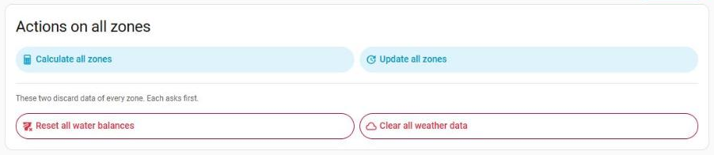

Zone configuration¶
Specify one or more irrigation zones here. The integration calculates irrigation duration per zone, depending on size, throughput, state, module and sensor group. A zone can be: * disabled: The zone is then not calculated and duration will be set to 0. * automatic: The zones duration is automatically calculated. * manual: You set the duration yourself, in minutes. Every start waters the zone for that duration, whatever its water balance, and a run keeps it.
When entering any values in the configuration of this integration, take notice of the labels provided so you enter values in the correct units.
Multi-zone support¶
For irrigation systems that have multiple zones which you want to run in series or independent you need to create multiple zones. The configuration should be done for each zone, including the area the zone covers and the corresponding settings.
Adding a zone¶
You need to specify the following to add a zone:
- Name: The name of your zone, e.g. 'garden'
- Size: The size of this zone (m2 or sq ft)
- Throughput: The flow of this zone (liter/minute or gallon/minute)
After entering the information, click Add zone to add the zone.
Each zone is shown as an entity in Home Assistant.
After adding a zone, make sure to further configure your new zone.
Actions on all automatic Zones¶

You can perform the following actions on all automatic zones:
- Update all zones: Retrieve the weather data for all sensor groups for all automatic zones.
- Calculate all zones: Calculate irrigation duration for all automatic zones. This will also delete weather data after calculation.
- Reset all water balances: Set the water balances for all automatic zones to 0.
- Clear all weatherdata: Remove all collected weather data for the sensor groups used by any automatic zone.
Configuring a zone¶
To configure a zone, the amount of water that flows through the irrigation system (throughput) and the area the irrigation system reaches (size) must be known. If you do not know these values for your system, you can also directly enter the precipitation rate (in mm/h or in/h) for the zone. To determine the precipitation rate, place a straight-sided container in the zone, run the irrigation for exactly one hour, and measure the depth of water collected: that depth, in mm (or inches), is your precipitation rate per hour.
Every field of a zone has a short hint under it in the panel. For a manual zone, the line under the zone name shows its duration and litres; an automatic zone does not show it. The status band of an automatic zone reads the live estimate: "Short by X mm: about N min (V L) at the next calculation" when the estimate gives a duration, "Will water ... at the next start" when a stored duration exists, "Nothing to water" with the deficit under the zone's threshold, or "has what it needs".
You can change the following settings on a zone:
- Name: change the name of a zone
- Input method: choose how the zone's precipitation rate is determined:
- Throughput & area (default): the rate is calculated from Size and Throughput.
- Precipitation rate: enter the rate directly.
- Size: change the size of a zone (only used with the Throughput & area input method)
- Throughput: change the throughput of a zone (only used with the Throughput & area input method)
- Precipitation rate: change the directly entered rate (only used with the Precipitation rate input method)
- Drainage rate: how fast a saturated root zone drains, in mm/h, which is the soil's saturated hydraulic conductivity. It only applies when
bucket > 0, meaning the soil is above field capacity. It is the full rate at saturation, when the water balance reaches the maximum water balance; below that it falls steeply with how much surplus is left, following Brooks and Corey, Eq. 4-6. The drainage over a calculation is worked out from that rate law exactly, so a surplus drains quickly at first and more and more slowly as it empties. Indicative values, from the texture-class averages in Rawls, Brakensiek and Saxton (1982): about 210 mm/h for sand, 60 for loamy sand, 26 for sandy loam, 13 for loam, 7 for silt loam, 2 for clay loam and under 1 mm/h for clay. A new zone starts at 8 mm/h, loam in the panel's soil list. Zones made earlier started at 50.8 mm/h, which is fast for most garden soils, and keep it. Either starting value reads as "Not chosen yet", with the number, until a soil is picked or a rate typed. The field appears right under Soil only when the soil is "I set the drainage myself", in both modes: a soil chosen by name stands for its rate. A drainage rate of 0 means a surplus never drains: rain above field capacity then stays in the water balance until evaporation removes it, and the next irrigation is delayed by however many days that takes. - State:
- Automatic: Smart Irrigation calculates the duration from the water balance and waters at the start. It needs a sensor group.
- Manual: waters only when asked, for the duration you typed. No sensor group required.
- Disabled: never watered, and its balance is not followed.
-
Evapotranspiration: how this zone's water need is worked out, in three answers. Calculated by Smart Irrigation, from your measurements (temperature, humidity, wind, sun), which is FAO-56 Penman-Monteith. Provided by a sensor or a service, when you already have an evapotranspiration in millimetres and it is taken as it is. A fixed amount, so many mm a day whatever the weather. The module behind your answer is created and reused for you, one per zone; there is nothing to create by hand and no module to choose.
On the advanced panel, the module's own setting appears with it: Look ahead, the number of days to come that are averaged into today's need (0 by default), for a zone calculated by Smart Irrigation, and the evaporation per day for a zone that uses a fixed amount, a positive number of mm the zone loses each day. Each zone has its own, so changing it here changes nothing anywhere else. - Sensor group: Choose the sensor group that provides the weather data for this zone. - Water balance: Either calculated or manually set. A negative water balance means the zone is short of water. If
bucket >= 0then no irrigation is necesarry, ifbucket < 0irrigation is necessary. See automations for examples on how to use this value to decide to irrigate. - Maximum water balance: how much water the root zone can hold above field capacity before it is saturated, so it only applies whenbucket > 0. Anything beyond it runs off, and it is the saturation reference the drainage curve is scaled by. It is not the total water your soil holds for the plant, and it never changes when a zone starts watering.Physically it is
(saturation - field capacity) x root depth: the soil's drainable porosity over the depth the roots use. The same averages give about 0.35 for sand, 0.19 for loam and 0.08 for clay, so for a 20 cm root zone roughly 70 mm for sand, 40 mm for loam and 15 mm for clay. Take them as a starting point: they move with how field capacity is defined, and a real soil is not a class average.Sand gets the larger value, not the smaller. Its big pores hold a lot of water for the short while it takes to drain and little once it has; clay is the reverse. Earlier versions of this page gave 30 mm for clay and 12 mm for sand. Those are closer to the available water capacity, which belongs to the other way of counting soil water, and they are inverted for this one. See discussion #783 for how this was worked out.
-
Lead time: Time needed to warm up your irrigation system (in seconds), e.g. time to establish a connection, start a pump, build pressure, etc. After the duration is calculated, the lead time is added but only if the duration is > 0.
- Maximum duration: The maximum duration of the irrigation, to avoid flooding, wasting water, etc. When one run at this duration cannot make up what the zone loses between two waterings (a drip line capped at ten minutes with three days between waterings, say), Smart Irrigation raises a repair issue naming the zone: its deficit would otherwise grow for good. It is advice, and clears itself once the zone can keep up.
-
Crop factor (Kc): The factor between the reference evapotranspiration and what the planting uses. The field appears right under What grows here only when that choice is "I set the crop factor myself". It scales the evapotranspiration to the water your crop actually uses,
ETc = ET0 * Kc, so the water balance is depleted at the crop's rate rather than the reference one. It is applied to the evapotranspiration and not to the rain that fell on it, nor to the resulting duration. For lawns, it is recommended to set the crop factor depending on your grass type (See this discussion for more details):- Cool-reason grasses (such as fescue, bluegrass) should be set to
0.8 - Warm-season grasses (such as bermuda, zoysia) should be set to
0.7.
It carries plant density too, not just species. The reference the calculation starts from is a continuous grass surface, so the figure quoted for a species assumes it covers the ground. A zone that does not is using less water per square metre than that figure says, because there is less leaf there to lose it. A hedge on a drip line, measured over the strip its emitters wet, is close to full cover once it has grown together and the species figure is about right. A young or widely spaced planting is not, and its factor should come down roughly in proportion to how much of the zone the canopy actually shades. The landscape literature writes this as the species factor multiplied by a density factor, which is the same idea.
- Cool-reason grasses (such as fescue, bluegrass) should be set to
This is why the area you enter and the crop factor have to describe the same patch of ground. If you take the whole bed as the area for a drip line, you are claiming a canopy over all of it; if you take the wetted strip, you are claiming one over the strip, which for an established hedge is true. Either can be made correct, but not by mixing one area with the other's factor.
A dry spell waters the same as it always did: the crop factor ends up multiplying the same total either way. What changes is a period with rain, where a factor below 1 used to credit only that fraction of the millimetres that fell and therefore over-watered, and the moment irrigation becomes necessary, which now arrives at the crop's rate of depletion rather than about 1/Kc times too early.
- Soil: the soil of the zone by name (sandy, sandy loam, loam, clay loam, clay), which stands for its drainage rate (see Drainage rate above). Choose "I set the drainage rate myself" to type the rate. A zone nobody chose a soil for reads "Not chosen yet:" and its starting rate; choosing that again puts the zone back on 8 mm/h.
- What grows here: the planting by name (lawn, vegetables, flowers, shrubs, hedge, fruit trees, vines, ground cover), which stands for its crop factor. Choose "I set the crop factor myself" to type the Crop factor (Kc) above. A zone nobody chose a planting for reads "Not chosen yet: factor 1.0".
- Soil moisture sensor and Skip at or above (advanced mode; once a sensor is set, they show in every mode): a sensor of the soil of this zone and the % from which the zone sits out a run. See Skipping a run.
- Linked valve/switch: the valve or switch that waters this zone. It is what observed watering watches, and what Smart Irrigation opens with Calculate and water.
- Cumulative volume meter: a water-meter total for the zone, for exact crediting instead of throughput x time. See the volume meter.
- Days between irrigation (advanced mode; once set, it shows in every mode): the minimum number of calendar days between two waterings of this zone alone. Empty, the default, follows the general days between irrigation setting, which is what every installation did before this field existed. A number replaces the general setting for this zone: 1 waters it every day it needs water, 3 at most every third day, 0 removes the restriction for it. The days are counted from the last time this zone was watered, and the zone's deficit keeps building while it waits, so it is made up at the next run. Useful when one garden holds a lawn that wants infrequent deep watering and flower beds that want water daily.
- Crop factor by month (advanced mode): for a crop whose water use follows its growth, the crop factor (Kc) of each month, January first. A month left empty uses the crop factor of the zone, and twelve empty months are that crop factor all year, as before. A lawn can read 0.6 in March, 0.9 in June and 0.5 in November without a single adjustment to create. Seasonal adjustments still apply on top, as a multiplier of the factor of the month.
- Available water and allowed depletion (advanced mode): what the soil of the zone holds for the plants, in mm, and the share of it the plants may use up before they suffer. Empty, the default, leaves the water balance exactly as it was: the deficit grows for as long as it does not rain. Set the available water (the root depth in metres times what the soil holds per metre of depth, about 50 to 110 mm for sand, 130 to 180 mm for loam and 120 to 200 mm for clay according to FAO-56, Table 19, so a lawn rooted at 0.15 m on loam holds about 20 to 27 mm) and two things change. The deficit cannot go below it, because a soil cannot be drier than that, and once the deficit passes the allowed share of it (50% unless you change it) the plants draw less water, falling to nothing as the soil empties (the FAO-56 stress coefficient). A zone watered in time never reaches that point, so the figure matters most after a long dry spell or a missed run, where it stops the water balance from showing a deficit no plant could have used. The threshold below stays in mm and is not tied to it.
- Distribution efficiency (advanced mode): the share of the water leaving the emitters that reaches the plants, in %. Empty is 100%: the throughput is taken at its word, as before. A zone at 80% waters 25% longer for the same depth, and credits the water balance with only 80% of what it delivers, whether it is timed, observed or metered. Sprinklers in wind or on a slope lose some; drip loses almost none.
- Irrigation threshold: how much of a soil moisture deficit to let build up before watering at all, in mm or inch. 0, the default, waters as soon as anything is missing, which is what every installation did before this setting existed; it is not what agronomy recommends for anything, a lawn included. Set a threshold and the zone stays dry until that much water is owed, then delivers all of it in one deep run: a lawn wants a small one because its roots are shallow, a tree or a hedge a large one. It changes when a zone waters, not how much: once the threshold is reached the run still covers the whole deficit. It follows that a zone never waters less than its threshold, so it also rules out very short runs. In soil terms this is the management allowed depletion (MAD).
To pick a value, work from the water your soil actually holds for the plant, the total available water: TAW = available water capacity of the soil x root depth. As a rough guide the available water capacity runs about 50 to 110 mm per metre in sand, 130 to 180 in loam and 120 to 200 in clay (FAO-56, Table 19), and the root depth is what matters for that planting, perhaps 0.15 to 0.3 m for turf and a metre or more for an established tree. The threshold is then a fraction of that, p x TAW, with p around 0.5 as a starting point (FAO-56 gives per-crop values, mostly between 0.4 and 0.6). A lawn on loam at 0.2 m therefore lands somewhere near 15 mm.
Do not derive it from the Maximum water balance: that setting caps the surplus above field capacity, which is the other side of zero and a different quantity entirely.
The default of 0 is there to keep existing installs behaving exactly as before, not because watering the instant anything is missing is good practice. Deep and infrequent watering suits a lawn too, it simply wants a smaller threshold than a tree because its roots are shallower.
* view weather data. View the last 10 records of the associated sensor group.
* view watering calendar. View a yearly watering calendar based on the location and normal weather patterns.
* delete the zone.
A zone in YAML¶
The Edit in YAML icon in a zone's header row shows its settings as text, in place of the form, and back, as for a program. The numbers are in the units the panel shows. Only settings are written: what the calculation and the runs write (water balance, duration, explanation, last calculation, measured throughput...) is not, and cannot be set there. An optional setting you remove is cleared; a required one (name, size, state...) is kept. Nothing is saved until Apply, which saves only what changed, the same way the form does; a key that is not a zone setting, or a value the zone refuses, is named under the editor.
name: Front lawn
state: automatic
size: 50
throughput: 12
linked_entity: valve.front_lawn
safety_off_topic: zigbee2mqtt/front_lawn_valve/set
safety_off_state_key: state_l1
open_resends: 0
YAML only: two zone options have no field in the form, even when they are set. Editing the zone in the form keeps them, and a zone that uses one says so in a Set in YAML (not editable here) box, with Edit in YAML at hand:
safety_off_state_key: state_l1, the safety off state key (empty isstate);open_resends: 0, how often the open is sent again while the valve has not confirmed (0 to 10; empty is the default).